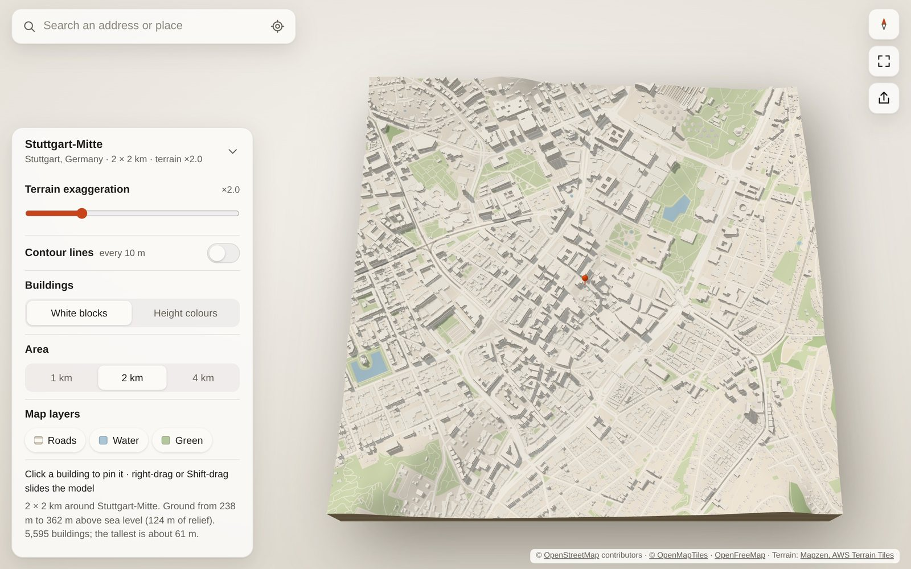

How it works
Your neighbourhood as a 3D model, a poster or a 3D print
The street you grew up on, where you met, the town you left: type the address and Your Place builds a miniature of the square around it (300 m to 4 km) in your browser within a few seconds: the real terrain underneath and every mapped building standing on top, like an architect’s model. It’s free, needs no account and works on a phone.

Three steps
-
Search a place. An address, a street, a village, a postcode or raw coordinates such as
48.7765, 9.1772. Or tap “use my location”. - Look around. Drag to turn and tilt, pinch or scroll to zoom, two fingers (or Shift-drag) to slide. Tap a building to put the pin on it, “this one is ours”. Double-tap or double-click a spot to load the area around it.
- Keep it. Share a link that opens the same view with the same house pinned, download a poster image, or download an STL file to 3D print.
What’s in the model
- Terrain from open elevation data. Hills can be exaggerated from 1× to 5× and drawn with contour lines.
- Buildings at the height recorded in OpenStreetMap, or its number of floors × 3 m. Where neither is mapped, the height is estimated from the neighbourhood, and the app says what share of buildings that is. Show them in white, grey, sand or dark, or coloured by height.
- In English, Spanish, Portuguese (Brazil) or German, following your browser’s language, or picked in the settings. This page is in English only for now.
- Roads, water and green areas painted on the ground, each of which you can switch off.
- Sea drawn from OpenStreetMap’s coastline, so harbours and bays sit at sea level.
- Your Place · Data, a second app for open data on the model, one layer at a time: steepness of roads and paths, from golden yellow (3–6 %) to dark red (over 15 %), measured on the terrain over 60 m at a time (the terrain data has points 10–30 m apart, so it’s an estimate: short ramps and stairs can be missed, and bridges are left out); traffic in Hamburg, the cars or bikes the city counted in each of the last 24 hours, as red streets that rise with the traffic, with a bar chart of the day; and, over either, your route from a GPX or TCX file (a run, a ride, a race), with its steepest climbs, a height profile and a replay.
3D printing your place
Open the share menu, pick a print size and download the STL. The file is a single solid in millimetres: the terrain as a block on a 3 mm base, with every building standing on it. It is checked to be watertight, so slicers such as PrusaSlicer, Bambu Studio, OrcaSlicer and Cura shouldn’t need to repair it. North is at the back of the print.
| Area | 10 cm print | 15 cm print | 20 cm print |
|---|---|---|---|
| 1 km | 1:10,000 · 1 mm | 1:6,670 · 1.5 mm | 1:5,000 · 2 mm |
| 2 km | 1:20,000 · 0.5 mm | 1:13,300 · 0.75 mm | 1:10,000 · 1 mm |
| 4 km | 1:40,000 · 0.25 mm | 1:26,700 · 0.4 mm | 1:20,000 · 0.5 mm |
Tips
- Choose a small area for a big print. Houses are tiny at true scale; 300 m to 2 km on 15–20 cm shows streets and houses best.
- Print big in tiles. Split the print into up to 8 × 8 tiles of the print size you pick: 64 tiles of 20 cm make a 1.6 m model. You get a ZIP with one STL per tile (A1 is the north-west corner), the title ledge as its own piece, and a note on how they fit together.
- Water sits 1 mm lower than the land in the print, so rivers, lakes and the sea stand out and are easy to paint. Untick it in the share menu to keep the water level.
- Raise the roads and parks for painting: roads, paths and railways can stand 0.4 mm above the ground with sharp edges, and parks and woods 0.6 mm. Both are off by default; tick them in the share menu.
- Your route in the print: in Your Place · Data, a loaded route stands as a raised line, 1.2 mm wide and 0.8 mm high (twice the roads), level across bridges: easy to paint, next to the medal. On by default when a route is shown.
- Exaggerate the terrain before you export: the print uses the same setting as the screen. 2–3× makes gentle hills readable.
- No supports needed. The model sits flat on its base. A 0.4 mm nozzle and 0.12–0.16 mm layers keep small buildings crisp.
- Large areas make large files. A 2 km city centre is about 10–15 MB, a 4 km one up to about 40 MB.
- If a building’s outline in the map data is broken beyond repair, it is left out and the app tells you how many.
Privacy
- No account, no cookies, no analytics. Your Place has no server of its own: the app runs in your browser.
- What you type in the search box goes from your browser to the address search services Photon (by komoot) and, if needed, Nominatim (OpenStreetMap), which return its coordinates.
- Share links hold only coordinates and the view, never the address you typed. A shared model is named after its neighbourhood, not a street address.
- Map data you have loaded is cached on your device so it opens faster next time.
- A route file (GPX, TCX) is read in your browser and never uploaded or stored; reloading the page forgets it. Share links include the route only if you tick that, and then only the stretch shown, without times or a name.
- With the traffic layer on in Hamburg, the corners of the square you’re looking at go to the City of Hamburg’s traffic server, which returns its counts.
Questions
My house is missing, or flat
Buildings come from OpenStreetMap, which volunteers map by hand. Cities are well covered; some villages have few buildings, and many have no height recorded. You can add your house, or its number of floors, yourself on openstreetmap.org, and it shows up here once the map tiles update.
Which devices work?
Any current browser with WebGL 2: Safari, Chrome, Firefox or Edge, on a phone, tablet or computer. You can also install it as an app from the browser menu.
Can I share what I make?
Yes. The map data is © OpenStreetMap contributors under the Open Database Licence, so credit “© OpenStreetMap contributors” wherever you show a model, poster or print. Posters carry the credit already.
Data sources and credits
- Map data © OpenStreetMap contributors, ODbL
- Vector map tiles: OpenFreeMap, schema © OpenMapTiles
- Terrain: Mapzen terrain tiles on AWS Open Data
- Address search: Photon by komoot, Nominatim
- Fallback map data: Overpass API
- Traffic counts: Freie und Hansestadt Hamburg, Behörde für Verkehr und Mobilitätswende, dl-de/by-2-0, via the city’s SensorThings API
Your Place is open source under the MIT licence: github.com/yourplace3d/3d-city. Ideas and bug reports are welcome there.